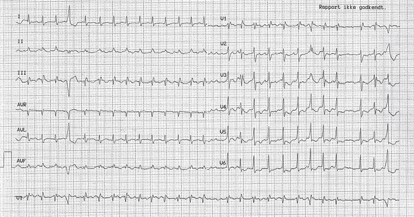
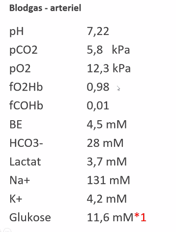
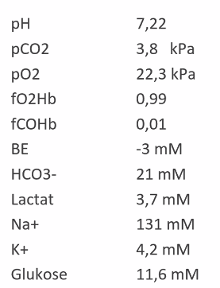
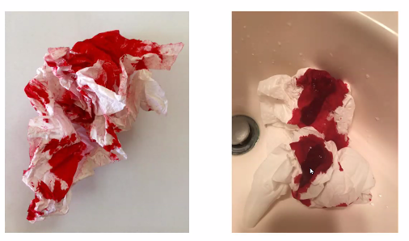
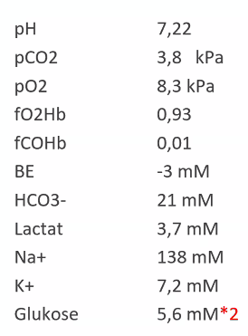
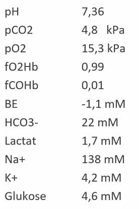
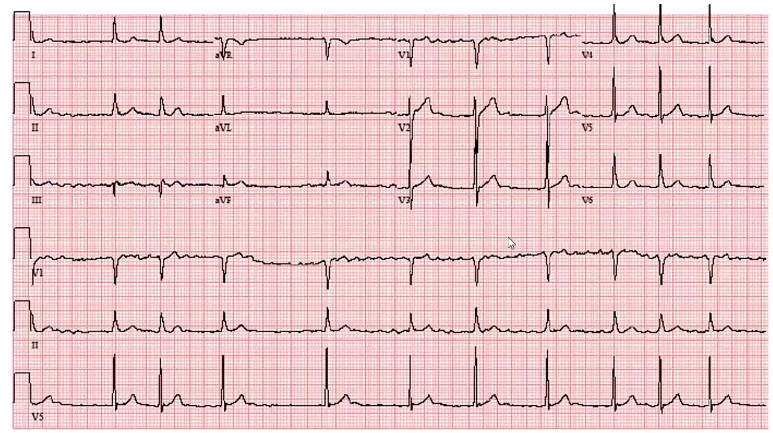
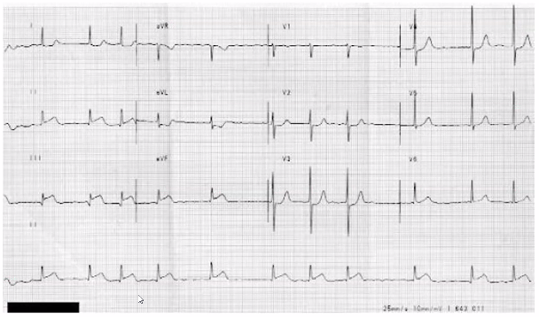

Komplekse cases
Dan siger velkommen
- De har fået meget sukker, så det kommer til at gå stærtk... eller noget..
- Det er virkelige patienter.
- Komplekse patienter - neuro var lige over stregen
Case 1
- Klokken er 8.20 på din første dag i KBU og du bliver sat til at tage i mod din første patient 72-årig kvinde, kendt med KOL og diabetes. Indbringes med Falck grundet brystsmerter *1
Gennemgang
- ABCDE
- A: frie luftveje - hvordan har du det?
- talende, men lidt stakåndet
- A: FRI
- B: resp arbej? RF?
- Ligger ned, SAT fin, 5 L ilt på næse, egalt luftskift.
- C: st.c, kappilær, varm? tør? farve?
- IV-adgange på BT 95/60.
- EKG.
- Giver en lille væskebolus *
- A-gas.
- Shockeret? JA?
- D:
- A: Talende, men noget stakåndet
- B: RF 32, SAT 98% med ilt-tilskud, egalt luftskifte
- C: BT 95/60, p 155, hud bleg
- D: Helt VKO
- E: Tp. 37,8 gr.
- Supp anamnese
- Har været kortåndet hele morgenen med tiltagende brystsmerter den sidste time.
- Har fået 300 mg ASA og ilt i ambulancen
- Medicin:
- Inh. Singulair
- D-vitamin
- Norvasc 5 mgx1
- Ventoline pn.
- Hjertemagnyl 75 mgx1
- Metformin 1000 mg x1
EKG
 * P-takker nej * Eksatrsystole * QRS smalle * uregelmæssig rytme * lidt ST-depression, bob bob * AFLI. * så kan man ikke vurderer iskæmi så godt.. * pga hurtig aktion.
A-gas

- Acidose
- Normalt .
Videre
- Bolus? hjælper det?
- Lejring
- Biokemi 19-06-2020 12:44
- Inficieret?
- Urinstix?
- Ekkokardiografi?
- Rtg thorax.
- Aortadissektion
- CT-thorax
- LE
- Wells score
- RV -
- Septisk shock
- Tegn til infektion?
Diff diagnoser POLL
- STEMI
- [TODO: Kunne dette udelukkes ved EKG eller ej? 19-06-2020 12:51]
- NSTEMI
- Pneumoni
- Aortadissektion
- Atrieflimmer med hjerte
- KOL in ex
- Septisk shock
- Reflux
- Næppe alene
- Anafylaktisk shock.
- Ikke oplagt.
- LE
Slut: 19-06-2020 12:51
Case 2
- 29-årig kvinde indbringes bevidstløs
- A: Snorkende vejrtrækning
- 19-06-2020 12:52
- Hageløft
- Nasalt airway
- B: RF 23, SAT 100% med 15 liter tilskud, egalt luftskifte
- _Når man skruer under 10 lter på hudson, så brille.
- C: BT 105/60, p 125
- Suspekt for ungt person. med den høje puls. Normal BT
- D: AVPU=P, BS 11.0 mM
- Hvordan smerte stimuler? Neglelege med kugle
- BS er akutfase reaktant. Stiger pga cortisol + adrenalin.
- E: Tp. 39,4 gr.
- Anamnese: Hvad fanden er der sket?
- Supplerende anamnese: Har været syg et par dage med influenza, fundet bevidstløs her til morgen. Har været obs. for epilepsi efter nogle synkoper
- Medicin: 0
ABG

- Altid ilt først
- pH sur
- pCO2 norm
- Laktat høj
- BE -3
- Metabolisk acidose
- BS 11,6 mM
Videre diagnostiske overvejelser
- Hvad fejler hun mon?(Multiple Choice)
- Influenza:
- Meningitis:
- JA, med septisk shock
- Epilepsi
- Imod: Tp for høj? BT lavt?
- For: Laktat høj, bevidstløs? genvinde bevidsthed.
- SAH
- For: Bevidstløs? Traume anam? NEJ. Aneurismefamilie?
- Imod: ung til spontant SAH. Lav BT.
- Udred: Pupil, Lp med xantokromi, CTc
- Tumor cerebri
- Imod: sjælden fugl. BT lavt.
- For:
- Septisk shock
- JA, med septisk shock
- Videre
- Biokemi, inf parametre.
- NRS
- qSOFA = 2
- Petikker
- Isolation
- Lumbalpunktur.
- AB - indenfor 30 min på mistanken.
- Venyler før - immer.
- Dexa 10 mg, Ceftriaxon 4g x1, Benzylpencillin 3 mio IE x 6
Case konklusion
- Ville være fint at starte IV AB og så kører i scanner.
Case 3
62-årig mand kendt med adipositas og forhøjet blodtryk. indbringes med kraftig næseblod
- A: Talende, men blod drypper både fra hø. næsebor og mund
- B: RF 12, SAT 94% uden tilskud, egalt luftskifte
- C: BT 185/90, p 105, hud bleg
- Godt tegn ved bleg hud?
- Varm og tør = cirkuleret, kold og klam = dårlig cirkulation
- Ikke på vej i shock.
- Godt tegn ved bleg hud?
- D: Helt VKO
- E: Meget blod på tøjet
- Supplerende anamnese: Har blødt nogle timer non-stop, tidligere haft apoplexi
- Medicin:
- Selozok 25 mg x 2
- D-vitamin
- Norvasc 5 mgx1
- Det ikke løgn: Inviterede alle praksisterende læger på skitur i 80'er. 5 mg = Hyggeblodtrykssænkende.
- Corodil 20 mgx1
- Hjertemagnyl 75 mgx1
- Plavix 75 mg x1
- Metformin 500 mg x 1
- Medicin tanker: compliance? Højt BT iforhold til 3stof, men kan også være få timers mangel på medicin
Breakout
- Stop blødning?
- Tampon i næsen, følg den lokale vejl.
- Ring til ØNH og evt. anæstesi hvis det ikke stopper eller truer luftveje.
- Is i munden, holder for næsen?
- RhinoRapid, detumesescer
- Sænk blodtryk?
- Trandate? Labetelol
- Problem: betablokker. vant til betablokker.
- Lang halveringstid. Bordet fanger, kun adrenalin infusin der kan revereteter.
- Problem: betablokker. vant til betablokker.
- Dan: Tror ikke det er nødvendigt.
- Trandate? Labetelol
- Koagulationsstatus?
- TEG / ROTEM?
- Kan tage trombocytter (ej funktion), INR,
- Give antidot?
- Ikke i.flg. vejledning.
- Hvor løst sidder TXA i denne situation?
- Det står i blødning under antitrombotisk vejledning.
- gøres ved alvorlig og livstruende blødning
- SÅ NEJ for nu
- Hvornår skal jeg ringe efter hjælp?
- Blødningsvagten.
- Truet luftvej eller man umiddelbart ikke kan få det stoppet.
- Hvad hed den der vejledning nu..?
- Reverting af AK-behandling. RADS el. NKR.
- dansk selvskab for hæmostase?
- Reverting af AK-behandling. RADS el. NKR.
Case konklusion
- Dan er tilfreds.
- Saftvandsblod vs koagler 
Case 4
48-årig kvinde, kronisk nyresvigt, indlægges af egen læge obs. pneumoni
- ABCDE? Goddag jeg er Josefine
- A: Kogende/rallende vejrtrækning
- B: RF 22, SAT 92% med 5 liter tilskud, egalt luftskifte
- tydeligt B-problem, dårlig SAT trods ilt. Op med den.
- C: BT 95/50, p 125, hud bleg
- fuck, lort. dårlig perfusion. DÅRLIG PT!
- D: AVPU=V, BS 5,6 mM
- E: Hæmodialyse-kath, i hø. jug. int., Tp. 39,2
- infektion?
POLL / Diagnoser.
- Pneumoni
- EL siger dette *
- Kateterinfektion
- Lungeemboli
- Hyperkaliæmi
- Influenza
- Ja, det kan jo godt være..
- Lungeødem
- kogende, rallende
- Lavttryks lungeødem.
- Hjertesvigt
- Hvorfor hjertesvigt?
- Nyresvigt, vejrtrækning, BT.
Supplerende anamnese
Tiltagende skidt over de seneste dage. Dialyserer x 3/uge, har væskerestriktion på 1000 mL/dag.
- Fortolkning: Lorte nyrefunktion. Urinoutput = 0ml
Medicin
- Selozok 25 mgx2
- D-vitamin
- Unikalk Forte
- Norvasc 5 mgx1
- Hjertemagnyl 75 mgx1
ABG

Start med pO2, så Dan glad
_Ok O2, acidose, Kalim kriminel, _
POLL / Diagnoser.
- Pneumoni
- Kateterinfektion
- Lungeemboli
- Hyperkaliæmi
- Ja, ingen tvivl.
- Kan det forklare symptomer?
- Kan give arytmier? JA, men resten af symptomer? NEJ.
- Influenza
- Lungeødem
- Hjertesvigt
Hvad gør man på Amager hvor der ikke er dialyse
- Hvordan fixer vi Ka?
- Glukose-Insulin-drop?
- Isoton glukose + Insuli svt..
- Kontrolleres løbende K+ + glukose.
- Kan vi give væske?! Man skal lige tænke sig om!
- Lungeødemet vil blive kraftigt forværret!
- Calcium infusion?
- Bricanyl iv
- Så I ringer lige!
- Resonium opstartes.
- Glukose-Insulin-drop?
Mulige overvejelser
- ilt, morfin (man kan godt give den første dosis trods nyrefunk.)
- AB på feber fokus. Kateterfokus. Staph A.
- Ampicillin + Gentamicin. siger pro.medicin,
- Ingen nyre? Første skud er loading. Forsinket anden dosis. NYresvigtet har hun allerede. så fuck det. Høretab!
- pip/tazo. altertivt.
- Ampicillin + Gentamicin. siger pro.medicin,
- EKG!
- Hjertesvigt
- Rtg thorax
- Ekkokardiografi. Der skal komme en kardiolog.
- D-dimer? / Wells score? Tror vi på?
- Troponiner
- Lungeødem
- Ilt + morfin (obs nyre) + lejring + furix (ja tak) + nitro? (NEJTAK, for lavt tryk.)
- Furix: laver venøs vasodilatation i lungerne! Det kan vi bruge selv uden nyre. Ret hurtigt ansalg på 2-3 min. SAT stiger og B bedres.
Take homes
- Lungeødem og højkalium, bobo med glukose insulin infusionen.
- Pas på væsken.
- Man kunne give høj konc. glukose i CVK.
- Ring til anæstesien, så gør de det for dig.
- Selvom nyresmader, så samme værktøjer
- Rtg thorax, ekg, ABCDE etc etc.
- Så sender I dem bare videre!
- Det er ikke svært at være KBU.
- Husk at ringe efter til hjælp. De
- Hvornår skal man ringe efter hjælp?
- Man ville ringe hurtigt her.
- Man kan ringe til bagvagt med det samme
- Kronisk Hæmodialyse er her, så du kommer bare lige INDEN kaffen! høhø
Case 5
16-årig mand indlægges bevidstløs efter Distortion
ABCDE
- A: Snorkende vejrtrækning
- B: RF 7, SAT 94% uden tilskud, egalt luftskifte
- Dan: 7 er normalt, dan er ikke bekymret, høj er meget værre
- C: BT 105/60 p90, varm og tør, bleg (gamer)
- D: Sovende, men reagerer på smertestimulation. GCS?
- Eyes: spontant, tiltale, smerte, nil=1
- Verbal: taler, konfus, word, lyde, nil = 4-5
- Motorik: kommando, afværger, lokaliserer, flex, eks, nil [TODO: usikker.]
- E: Lidt blod og bræk på tøjet, ingen synlige læsioner
Supplerende anamnese:
Været meget fuld i går, fundet ukontaktbar af studiekammerater til morgen
Medicin: ?
Mulige diagnoser
- Fuld
- Ja, det er oplagt - men det vil være en fejl bare at sende hjem!
- Det må ikke blive en sovepude.
- Neurotraume
- Neurologisk us, pupiller, CTc. Skrammer på hovedet
- Dan: Ikke sjældendt at Dan kommer til skade når han er fuld.
- Obj: Han har en bule i panden!
- Vi ordinerer regime: Commotio-regime.
- Puls, BT, vågen, .. sgpl ved hvad de skal 19-06-2020 14:34 *
- Hovedtraume: S100B kan tages ved lille mistanke. Hvis lav, så har den god negativ prædiktiv værdi.
- Meningitis:
- Tjah. Vi mangler en temp.
- Duk nakken på ham. (NRS)
- Ilt-mangel
- Nej.
- CO2-ophobning
- Nej normal.
- Røgforgiftning
- Nej, SAT < 100
- Ingen FCOHb 0,01
- Shock
- Nej. Fint BT, ej laktat.
- Hypoglykæmi
- Nej. ABG.
- Ketoacidose
- Nej ABG.
- Addison krise
- Kan vi godt udelukke efter ABG
- Bleg (så næppe primær)
- Ingen medicin (så næppe sekundær)
- Normal K, Na, BS
ABG

- Ilt først, fin fint.
- Rimelig okay. Intet suspekt.
- Supplerende biokemi
- S100B
- Ethanol
- Dan: tjooh
- U-tox.
- Den er så positiv for kokain.
- Hmm, det passer godt nok ikke lige med resten.
- Han har selv doseret antidot med ethanol.
- Den er så positiv for kokain.
- Nu har vi to tilbage
- Fuldskab og meningitis.
Take home
- Ofte fulde, udeluk farligt
- Selvom pt ssh fejler noget helt benignt, så skal farlgit udelukkes
- Lav ABG og lidt andet..
- Commotioregime ved skrammer + blod etc.
- 19-06-2020 14:36 STPS: Meningitis: Der har været NRS, skærve A-gas, feber, etc. 19-06-2020 14:37
- Så er der Dr. House cases. Bare udeluk det så godt I kan.
- De kan nok ikke alle sendes i CT-skanning bare fordi de er fulde
- Der skal være et Hovedtraume eller obj mistanke om det. (bule i panden etc.)
- S100B kan evt suppleres.
- Dan modtager mange fulde idioter i traumecenteret.
- CT-c er ikke sensitivt for idioti... *
Case 6
62-årig mand indbringes med Falck grundet kraftige turevise mavesmerter. Kendt med hypertension og atrieflimmer
ABCDE
- A: Talende, men besværet grundet smerter
- B: RF 18, SAT 84% med 12 liter tilskud, egalt luftskifte
- A-gas TAK!!
- C: BT 85/55, p 105, hud bleg
- Tør elelr svedende? HAN ER KØLIG OG VÅD
- D: Intermitterende ukontaktbar i forbindelse med smerteanfald, BS 5.4 mM
- E: Abdomen spændt og øm ved palpation
DIagnoser
- Perforeret hulorgan
- Tænker vi umiddelbart.
- Appendicit
- Thorakal AA dissektion
- Ukontaktbar ved smerteanfald kunne tyde på dissektion? Pga spaltning og fald i BT samtidig?
- Der skal måles BT på begge arme! Forskel tyder på AA-dissektion.
- Myokardieinfarkt
- Abdominal AA rumpering
- Prut på tværs
Supplerende anamnese:
Smerterne kom lige pludselig efter spisning. Har også konstante smerter i ve. arm.
- Nu tænker vi Aortadissektion eller myokardiinfarkt.
Medicin
- Selozok 25 mg x 2
- Digoxin 62.5 pg x 1
- Norvasc 5 mg x 1
- Corodil 20 mg x 1
- Hjertemagnyl 75 mg x 1
- Fiskeolie
Yderligere undersøgelser
- EKG
- Ekkokardiografi
- FAST? *
EKG
 AFLI, ej suspekt iskæmi
 Alternativt EKG. Noget med AFLI og ST-elevation som kan være svært at se. OBS STEMI.
Mulige overvejelser
- Iltbehandling?
- JA!
- Væske?
- Ja, ikke kontraindiceret? obs stemi => kardiogent shock. Blødning?
- Pausere BT-medicin?
- Antibiotika?
- Nej, ikke umiddelbart.
- Udredning?
- Han skal i CT-skanner. Det er ikke KBU-problem.
- Kirurgi?
- Hvornår skal jeg ringe efter hjælp?
- Han er ustabil, så ring efter hjælp tidligt.
BOnus info: hvad sker der ved aortadissektion ned i aortaroden
Infarkt pga iskæmi aflukket kar. Det ene skal have rigelig blod, det andet med AK.
Take home
- Nogle gange er der to nemme heste at spille på
- Nogle gange er det to svære heste
- STEMI vs Aortadissektion vs rAAA.
- AK vs. blod?
- Dan ved ikke hvad han fejler.
- Ikke rigtig nogle gode regler.
- Afsløring: Blev kørt fra Amager til Hvidovre
- Kæmpe stort stort rAAA.
- Det kan åbenbart give turevise smerter.
- Kæmpe stort stort rAAA.